금속재료기사 (2015-05-31 기출문제)
1과목: 금속조직학
1. 강내의 비금속 개재물 중 그룹 B형 개재물에 해당되는 것은?
- 황화물 종류
- 규산염 종류
- 알루민산염 종류
- 구형 산화물 종류
(정답률: 76%)

2. 다음의 결정구조별 재료군 또는 특정공정에서 쌍정변형이 가장 일어나기 쉬운 조건은?
- 금속간화합물을 냉간가공할 때
- 조밀육방정 재료를 변형할 때
- 오스테나이트 철을 서서히 변형할 때
- 체심입방정 재료를 고온에서 서서히 변형시킬 때
(정답률: 80%)
3. 매시브변태(Massive Transformation)의 특징을 설명한 것 중 틀린 것은?
- 모상과 생성상은 동일한 조성을 갖는다.
- 성장속도는 마텐자이트 경우 보다 빠르다.
- 이동하는 모상-생성상 계면은 부정합이다.
- 형상변화는 마텐자이트처럼 자유표면 위에서 볼 수 없다.
(정답률: 64%)
4. 다음 그림에서 빗금친 abc 면의 밀러 지수로 옳은 것은?
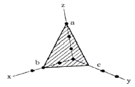
- (263)
- (236)
- (312)
- (362)
(정답률: 86%)
5. 베이나이트 조직에 대한 설명 중 틀린 것은?
- 페라이트와 시멘타이트가 층상으로 존재한다.
- 펄라이트와 마텐자이트 변태 중간에서 생성된다.
- 확산 및 무확산변태의 특징을 모두 갖고 있다.
- 페라이트와 시멘타이트 두 상으로 된 조직이다.
(정답률: 70%)
6. 순철의 A3 동소변태 온도는 약 몇 ℃ 인가?
- 210
- 723
- 910
- 1536
(정답률: 91%)
7. 치환형 고용체의 경우 용질원자와 용매원자의 치환이 난잡하게 일어난다고 하면 고용체 격자정수의 값은 용질원자의 농도에 비례하게 된다는 법칙을 무엇이라 하는가?
- 라울의 입칙
- 버거스의 법칙
- 레이티의 법칙
- 베가드의 법칙
(정답률: 85%)
8. 펄라이트(pearlite) 조직을 옳게 표현한 것은?
- Fe와 Fe3C로 구성
- Fe와 Cu로 구성
- Fe와 W로 구성
- Fe와 VC로 구성
(정답률: 93%)
9. 다음 중 점 결함이 아닌 것은?
- 원자공공
- 크라우디온
- 적층결함
- 프렌켈결함
(정답률: 87%)
10. 침입형 고용체에 고용될 수 없는 원소는?
- C
- H
- P
- N
(정답률: 85%)
11. 장범위규칙도(degree of long-range order)가 1 인 합금은?
- 완전 불규칙 고용체이다.
- 불완전 규칙 고용체이다.
- 완전 규칙 고용체이다.
- 불완전 불규칙 고용체이다.
(정답률: 93%)
12. 그림과 같은 3성분계 수직단면도의 반응형은?
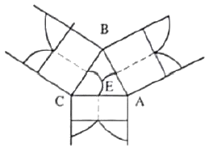
- 공정형
- 포정형
- 편정형
- 전율가용체
(정답률: 79%)
13. 치환형 고용체를 이루는 인자에 대한 설명 중 틀린 것은?
- 결정구조가 비슷할 때
- 이온화 경향이 비슷할 때
- 두 원자의 결합에너지가 작을 때
- 원자반지름의 차가 15% 미만일 때
(정답률: 76%)
14. 아공석강에서 형성되는 초석페라이트를 형상학적으로 분류할 때 포함되지 않는 것은?
- 스페로다이트(Sperodite)
- 이디오모프스(Idiomorphs)
- 위드만스테텐판(Widmanstatten plate)
- 그레인 바운드리 알로트리오모프스(Grain boundary allotriomorphs)
(정답률: 71%)
15. 심하게 냉간가공한 재료를 가열할 때 나타나는 특성변화를 설명한 것 중 틀린 것은?
- 재결정 구간에서는 경도가 감소한다.
- 회복 구간에서는 전기전도도가 증가한다.
- 결정입자성장 구간에서는 강도가 감소한다.
- 재결정 구간에서는 연성이 급격히 감소한다.
(정답률: 70%)
16. 다음 그림은 어떤 형태의 규칙격자를 나타낸 것인가?
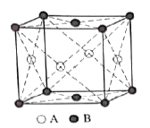
- AB
- AB2
- A2B
- AB3
(정답률: 70%)
17. 다음 상태도에서 자유도가 0인 점은?
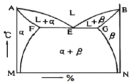
- A
- B
- E
- M
(정답률: 93%)
18. 금속의 가공경화(加工硬化)와 직접적으로 관계되는 것은?
- 회복
- 석출
- 재결정
- 전위의집적
(정답률: 82%)
19. BCC(body-Centered cubic lattice)의 근접 원자간 거리는? (단, a 는격자정수이다.)
- 1/√2 a
- √3/2 a
- √2 a
- √3 a
(정답률: 65%)
20. (101)면에 수직한 방향과 [112]방향 사이의 각은?
- 15°
- 30°
- 45°
- 60°
(정답률: 77%)
2과목: 금속재료학
21. 열처리 스프링용 강으로 사용되지 않는 것은?
- Si –Mn계 강
- S –Mo계 강
- Mn –Cr계 강
- Cr –V계 강
(정답률: 71%)
22. 분말야금법에 대한 설명으로 틀린 것은?
- 고융점의 재료를 제조할 수 있다.
- 재료의 균일성과 성분비 조절이 용이하다.
- 금속분말의 순도와 생산방법은 최종제품에 영향을 미치지 않는다.
- 용융법에서 2개 이상의 금속 또는 비금속이 혼합되지 않는 조성에서도 혼합한 조성의 제품 제조가 가능하다.
(정답률: 84%)
23. 강력 티타늄 합금 Ti-Al-V계의 설명으로 틀린 것은?
- 주조용 합금으로 용접성 및 담금질성은 나쁘다.
- 항공기 기체나 엔진 부품용으로 많이 사용된다.
- Al에 의하여 강도를 얻고, V에 의하여 인성을 개선한다.
- 고온 크리프 저항이 높기 때문에 터빈 블레이드에 사용한다.
(정답률: 84%)
24. 니켈(Ni)계 합금이 아닌 것은?
- 인코넬(inconel)
- 퍼멀로이(permalloy)
- 모넬메탈(monelmetal)
- 화이트메탈(whitemetal)
(정답률: 77%)
25. Mg-Al계 합금에 소량의 Zn과 Mn을 첨가한 합금은?
- 자마크(Zamak)
- 엘렉트론(Elektron)
- 하스텔로이(Hastelloy)
- 모넬메탈(Monelmetal)
(정답률: 78%)
26. 구상흑연주철을 만들기 위해 용융상태에서 주로 첨가하는 원소는?
- Mg
- Al
- Ni
- Sn
(정답률: 82%)
27. 강(steel)에 첨가하는 합금원소 중 질량효과를 가장 작게하는 원소는?
- Mn
- B
- Si
- Ni
(정답률: 79%)
28. 표면은 단단하고 내부는 인성이 있는 주철 재료로써 압연용 롤, 차륜 등의 내마모 기계부품에 이용하는 주철은?
- Al주철
- Ni주철
- 냉경주철
- 흑심가단주철
(정답률: 76%)
29. 섬유강화 금속(FRM)에 사용되는 강화 섬유가 아닌 것은?
- SiC
- 보론(B)
- MgO
- C(PAN)
(정답률: 75%)
30. 강(steel) 중에 함유된 질소 가스의 영향으로 옳은 것은?
- 산이나 알카리에 약하게 하며 백점의 원인이 된다.
- 페라이트 중에 고용되고 석출하여 강도, 경도를 증가시킨다.
- 강내부에 점재하여 강의 인성을 감소시켜 취성의 원인이 된다.
- 단조나 압연 가공시 균열을 일으키기 쉬우며 적열취성의 원인이 된다.
(정답률: 69%)
31. 비정질 금속을 제조하는 방법이 아닌 것은?
- 침지법
- 원심 급냉법
- 진공 증착법
- 전기 또는 화학도금법
(정답률: 63%)
32. 액화가스 등의 저온, 저장, 운반용기로 사용되는 저온재료가 구비해야 할 성질로 틀린 것은?
- 항복점 등의 기계적 강도가 클 것
- 인장응력장이 존재하고 있을 것
- 사용온도에서 내충격성이 클 것
- 가공성, 용접성, 내식성이 우수할 것
(정답률: 87%)
33. 상온에서 순철의 결정구조로 옳은 것은?
- BCC
- FCC
- HCP
- BCT
(정답률: 85%)
34. 문쯔메탈(Muntz metal)에 대한 설명으로 옳은 것은?
- 6 : 4 황동이다.
- 망간 청동이다.
- 알루미늄 청동이다.
- 7 : 3 황동에 주석을 첨가한 것이다.
(정답률: 84%)
35. 침탄용강이 구비해야 할 성질로 옳은 것은?
- 림드강(rimmed)으로 고탄소강이어야 한다.
- 탄소함량이 0.5~0.9%C 강이 적합하다.
- Cr, Ni, Mo은 침탄량을 감소시키는 원소이다.
- 고온에서 장시간 가열하여도 결정입자가 성장하지 않아야 한다.
(정답률: 72%)
36. 표점거리50mm, 직경5mm 인 봉재 시편의 인장 시험 결과, 절단 후 표점거리가 55mm이고, 인장강도가 152.8kgf/mm2으로 나타났다. 이 때 최대하중(kgf)은 약 얼마인가?
- 2500
- 3000
- 3500
- 4000
(정답률: 69%)
37. 탄소강을 담금질처리할 때 나타나는 마텐자이트의 강화현상에 대한 설명으로 틀린 것은?
- 결정의 조대화에 의한 강화이다.
- 급냉에 의한 내부응력 증가이다.
- 탄소에 의한 Fe격자의 강화이다.
- 오스테나이트의 무확산 전단응력에 의한 강화이다.
(정답률: 76%)
38. 절삭공구를 만들기에 가장 적합한 소재는?
- 내열합금
- 베어링강
- 초경합금
- 기계구조용강
(정답률: 86%)
39. 냉간가공(cold working)에 대한 설명으로 옳은 것은?
- 전위밀도가 감소하여 강도가 약해진다.
- 냉간가공은 재결정온도 이상에서 가공한 것을 말한다.
- 냉간가공으로 생긴 잔류응력이 재료 내에 압축응력으로 작용하여 피로강도가 나빠진다.
- 항복점 연신을 나타내는 강을 항복점 이상으로 냉간가공 하게 되면 항복점과 항복점 연신이 없어진다.
(정답률: 72%)
40. 라우탈 및 실루민 합금에 대한 설명으로 옳은 것은?
- Al-Cu-Ni계 합금을 라우탈(Lautal)이라 한다.
- 라우탈(Lautal)은 Cu를 첨가하여 주조성을 개선한 합금이다.
- 실루민(Silumin)은 Al에 대한 Si의 용해도가 높아 열처리 효과가 우수하다.
- Al-Si계 합금 중 공정점 부근 조성의 것을 실루민(Silumin)이라 한다.
(정답률: 74%)
3과목: 야금공학
41. 알루미늄 전해법을 용융염 전해법과 비전해법으로 나눌 때 용융염 전해법에 해당되는 것은?
- 투스법(Toth법)
- 알코아법(Alcoa법)
- 서브할라드법(Gross법)
- 환원법(Thermal reduction법)
(정답률: 75%)
42. 공기는 질소 79vol%와 산소 21vol%로 되어 있다고 가정할 때 표준상태에서 공기의 밀도(g/L)를 계산한 값은? (단, 분자량은 각각 N2 : 28, O2 : 32 이다.)
- 4.278
- 3.278
- 2.278
- 1.288
(정답률: 50%)
43. 온도와 압력이 일정한 닫힌계에서 A에서 B로의 상태변화가 일어난다. 평형상태는 어느 에너지가 최소값을 가질 때 도달하는가?
- 엔탈피
- 내부에너지
- 깁스 자유에너지
- 헬름홀쯔 자유에너지
(정답률: 81%)
44. 이상용액 중 i 성분의 생성열(ΔHM·id)은?
- 0의 값을 갖는다.
- 음의 값을 갖는다.
- 양의 값을 갖는다.
- 음양의 값을 다갖는다.
(정답률: 77%)
45. 압력을 높일 때 얼음의 융점변화에 대한 설명으로 틀린 것은? (단, S는 엔트로피이다.)
- ΔS(=S-S) ＞ 0
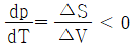
- ΔV(=V-V) ＞ 0
- 압력이 증가하면 융점은 하강한다
(정답률: 65%)
46. 0℃에서 물과 얼음이 평형상태에 있을 때 관계식이 틀린 것은? (단, H : 엔탈피, S : 엔트로피, G : 깁스자유에너지, (s) : 고체, (ℓ) : 액체)
- ΔG ＜ 0
- H(s) ＜ H(ℓ)
- S(s) ＜ S(ℓ)
- G(s) = G(ℓ)
(정답률: 73%)
47. 가역반응의 평형점에서 온도가 증가하면 어떻게 되는가?
- ΔH가 (+)값이 되는 방향으로 진행
- ΔH가 (-)값이 되는 방향으로 진행
- 흡열도 발열도 하지 않는다.
- ΔH 값은 관계가 없다.
(정답률: 76%)
48. 철강제조시 슬래그(Slag)의 염기도 계산식으로 옳은 것은?
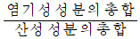
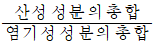
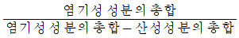
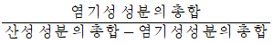
(정답률: 83%)
49. 어떤계가 가역 단열팽창을 했을 때 계의 엔트로피는 어떻게 되는가?
- 증가한다.
- 감소한다.
- 변하지 않는다.
- 증가할 때도 있고 감소할 때도 있다.
(정답률: 55%)
50. 탄소 1kg을 수증기와 반응시켜 CO와 H2가스를 얻었을 때 생성된 가스량은 약 몇 m3인가?
- 1.87
- 3.73
- 18.74
- 44.80
(정답률: 51%)
51. 1몰의 이상기체가 25°C에서 100기압으로부터 10기압으로 등온팽창할 때의 ΔA와 ΔG 값은? (단, A는 헬름홀즈 자유에너지, G는 깁스 자유에너지이다.)
- ΔA 값이 더 크다.
- ΔG 값이 더 작다.
- ΔA와 ΔG 값이 모두 같다.
- ΔG 값이 더 크고 ΔA값이 작다.
(정답률: 73%)
52. 플래시로 제련법의 특징을 설명한 것 중 틀린 것은?
- 분체 반응이므로 반응 속도가 빨라 노의 제련 능력이 높다.
- 장입되는 황화광의 반응열을 이용할 수 있어 연료비가 적게 든다.
- 배출가스 중의 이산화황 함유량이 높아 황산이나 액체 이산화황의 제조가 가능하다.
- 슬래그 중 동의 함유량이 거의 없어 슬래그를 다시 처리하는 시설이 필요하지 않다.
(정답률: 75%)
53. 항온, 항압하에서 계가 자발적 변화를 할 때 다음 중 옳은 것은? (단, U : 팽창에 의한 일을 제외한 나머지 일, G : Gibbs 자유에너지, A : Helmholtz 자유에너지)
- -ΔA ＞ U
- -ΔG ＞ 0
- -ΔG ＜ 0
- -ΔS ＞ 0
(정답률: 78%)
54. 산성 내화물에 해당되는 것은?
- 샤모트질
- 고알루미나질
- 마그네시아질
- 돌로마이트질
(정답률: 82%)
55. 1mole의 기체에 대한 반데르발스(VanderWaals) 상태 방정식은? (단, a 및 b는 상수, V는 부피, P는 압력, R은 기체상수, T는 절대온도를 표시한다.)
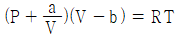
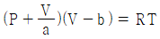
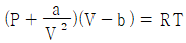
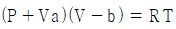
(정답률: 84%)
56. 열역학적 계(系)에서 고립계(孤立系)란 경계(境界)를 통하여 외계(外界)와 어떤 관계가 있는가?
- 에너지 및 물질의 수급이 없는 계
- 에너지 및 물질의 출입이 있는 계
- 에너지 수급은 없으나 물질의 출입이 있는 계
- 에너지 수급은 있으나 물질의 출입이 없는 계
(정답률: 76%)
57. 다음의 식 중에서 Gibbs-Duhem의 변형에 해당되지 않는 식은?
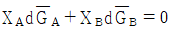
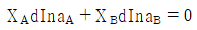
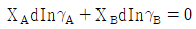
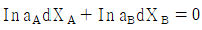
(정답률: 73%)
58. 규석벽돌에 대한 성질 중 틀린 것은?
- 실리카(SiO2)를 주성분으로 한다.
- 강산성으로 산성 슬래그에 잘 견딘다.
- 비중이 작고 저온에서 이상팽창이 거의 없다.
- 700℃ 이상의 고온에서 열팽창계수가 적다.
(정답률: 61%)
59. 제2종 영구기관을 설명한 것 중 옳은 설명은?
- 에너지를 창조할 수 있다.
- 에너지를 공급하지 않고 가동할 수 있다.
- 열역학 제2법칙에 일치 된다고 볼 수 있다.
- 열에너지를 모두 동력으로 바꿀 수 있다.
(정답률: 76%)
60. 이상기체에 대한 설명 중 틀린 것은?
- 이상기체 자체의 부피는 없다.
- 이상기체는 원자간의 인력이 없다.
- 이상기체는 반데르발스 방정식을 만족한다.
- 이상기체는 보일-샤를의 법칙을 만족한다.
(정답률: 70%)
4과목: 금속가공학
61. 딥드로잉(deep drawing)에 의해 성형한 제품에 이어링(earing) 결함이 생기는 원인은?
- 전연성
- 이방성
- 등방성
- 탄성여효
(정답률: 76%)
62. 전위선이 입자를 지나가는 데 필요한 전단응력(τ0)을 구하는 식으로 옳은 것은? (단, G : 전단탄성계수, b : 버거스벡터, 1 : 인근 입자 사이의 간극)
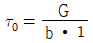
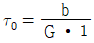
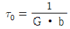
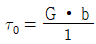
(정답률: 69%)
63. 샤르피 충격시험에서 해머를 올렸을 때의 각도를 α, 시험편 파단 후의 각도를 β라고 할 때, 충격흡수에너지를 구하는 식은? (단, W는 중량(kgf), R는 펜듈럼의 길이(m)이다.)
- WR(cosα -1)
- WR(cosβ -1)
- WR(cosβ -cosα)
- WR(cosα -cosβ)
(정답률: 85%)
64. 변형시효 현상에 관한 설명으로 틀린 것은?
- 항복점 현상과 관련된 현상이다.
- 강도가 증가하고 연성이 감소한다.
- 치환형 용질원자에 의한 분위기(atmos phere) 형성과 관련된 현상이다.
- 냉간가공시킨 금속을 비교적 저온에서 시효 시킨 후 다시 변형시킬 때 나타나는 현상이다.
(정답률: 64%)
65. 단조(forging)에 관한 설명으로 틀린 것은?
- 형단조는 자유 단조보다 복잡하고, 정밀한 제품을 대량 생산할 수 있다.
- 업세팅(upsetting)은 형 단조에 해당되며, 속이 빈 중공체의 단조에 적당하다.
- 회전 스웨이징(swaging)에 의하여 생산되는 제품은 냉간 가공의 모든 장점을 지니며 정밀도가 우수하다.
- 형 단조는 소재를 2개의 다이로 압축하여 다이 공동부 모양대로 제품을 성형하는 가공이다.
(정답률: 70%)
66. 재료를 가공할 때 변형 저항을 높이는 요인에 해당되지 않는 것은?
- 전위밀도
- 용매원자
- 용질원자
- 결정립계
(정답률: 76%)
67. 금속재료의 시험에서 비틀림 시험의 목적으로 옳은 것은?
- 항복강도와 연신율을 결정
- 연신율과 소성변형정도를 결정
- 비틀림 강도와 인장강도를 결정
- 강성계수 G값의 측정과 비틀림 파단강도를 결정
(정답률: 75%)
68. 다음의 응력-변형율 곡선 중에서 완전강-완전소성체를 나타내는 것은?
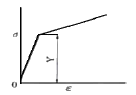
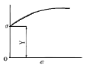
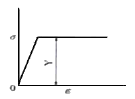
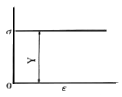
(정답률: 79%)
69. 철강재료의 소성변형시 변태유기소성을 이용하면 다음 중 어떠한 성질이 가장 현저하게 향상되는가?
- 강도
- 전성
- 마모성
- 주조성
(정답률: 68%)
70. 금속재료의 재결정 온도의 관한 설명으로 틀린 것은?
- 가공도가 작을수록 재결정 온도가 낮아진다.
- 금속의 순도가 높을수록 재결정 온도가 낮아진다.
- 재결정을 일으키는데는 최소한의 변형이 필요하다.
- 가공전의 결정입자가 미세할수록 재결정 온도가 낮아진다.
(정답률: 65%)
71. 길이 100mm, 폭 50mm, 두께 5mm인 철판을 폭은 변화시키지 않고 길이 방향으로 140mm까지 냉간 압연하면 판의 최종두께(mm)는 약 얼마인가?
- 1.6
- 2.6
- 3.6
- 4.6
(정답률: 60%)
72. 알루미늄이 다른 금속에 비하여 교차 슬립(cross slip)이 자주 관측되는 가장 큰 이유는?
- 적층결함 에너지가 커서 적층결함의 폭이 좁기 때문이다.
- 적층결함 에너지가 작아서 적층결함의 폭이 넓기 때문이다.
- 면심정방격자(FCT)이기 때문이다.
- 체심입방격자(BCC)이기 때문이다.
(정답률: 76%)
73. 재료가 초소성 특성을 나타내기 위한 요건을 설명한 것 중 틀린 것은? (단, Tm은 융해온도이다.)
- 확산계수가 커야 한다.
- 0.5Tm 이상의 온도이어야 한다.
- 10μm 이하의 미세한 결정립이어야 한다.
- 고온에서 결정 성장을 억제할 수 있는 제2상이 존재하여야 한다.
(정답률: 73%)
74. 피로 저항을 향상시킬 수 있는 방법으로 옳은 것은?
- 결정립의 크기를 증가시킨다.
- 적층 결함에너지를 작게 한다.
- 소수의 심한 슬립역을 조장한다.
- 비금속 개재물의 수를 증가시킨다.
(정답률: 73%)
75. 면심입방금속에서 슬립면이 {111}이고, 슬립방향이 <110>이면 슬립계는 몇 개인가?
- 8
- 12
- 18
- 24
(정답률: 75%)
76. 순금속의 재결정 온도가 높은 것에서 낮은 순으로 옳게 나열된 것은?
- 마그네슘＞납＞철
- 철＞마그네슘＞납
- 철＞납＞마그네슘
- 납＞마그네슘＞철
(정답률: 74%)
77. 쌍정(Twin)에 대한 설명 중 틀린 것은?
- 쌍정변형 후 양쪽 결정의 방향이 다르다.
- 원자의 이동거리는 한 원자거리보다 작다.
- 쌍정영역에서는 모든 원자면이 변형에 참여한다.
- 원자의 이동거리는 쌍정면으로 부터의 거리에 관계없이 일정하다.
(정답률: 63%)
78. 공칭스트레인(ε0)과 진스트레인(ε)의 관계를 옳게 나타낸 것은?
- ε0 = 1/ε
- ε = ln(1-ε0)
- ε0 = ln(1+ε0)
- ε = ln(1+ε0)
(정답률: 82%)
79. [그림]과 같이 응력축과 슬립면의 법선과의 각도를 ø, 응력축과 슬립방향과의 각도를 λ라고 할 때 분해전단응력 τ를 축 응력 σ로 표시한 것은?
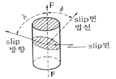
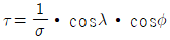
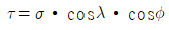
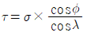
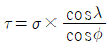
(정답률: 77%)
80. 압흔(Indentor)의 깊이로 재료의 경도값을 나타내는 것은?
- Shore 경도계
- Meyer 경도계
- Scratch 경도계
- Rockwell 경도계
(정답률: 82%)
5과목: 표면공학
81. 알루미늄을 양극으로 하여 일정한 전해액에서 적정 조건으로 분극시킬 경우 양극산화피막이 생성된다. 공업적으로 쓰이고 있는 양극산화피막의 전해질로 적당하지 않은 것은?
- 황산(H2SO4)
- 수산(C2H2O4)
- 크롬산(CrO3)
- 염화칼륨(KCl)
(정답률: 74%)
82. 금속의 표면에 기능을 부여하기 위하여 진공 용기 내에서 표면처리 하는 기술이 아닌 것은?
- 진공증착법
- 스퍼터링법(Sputtering)
- 이온도금(Ion Plating)
- 무전해도금(Electroless Plating)
(정답률: 62%)
83. 물리적 기상도금인 PVD의 특징이 아닌 것은?
- 처리온도가 높다.
- 기계적으로 응착이 된다.
- 밀착성이 CVD보다 낮다.
- 가열할 수 없는 물체에 적용할 수 있다.
(정답률: 78%)
84. SEM 이미지는 주입되는 전자에 의해 시료에서 방출되는 어떤 신호에 의해 영상화 되는 것인가?
- 투과 전자
- 이차 전자
- 특성 X-ray
- Auger 전자
(정답률: 75%)
85. Faraday 법칙에 관한 설명으로 틀린 것은?
- 전기도금 시에 석출량은 원자량에 비례한다.
- 전기도금 시에 석출량은 원자가에 반비례한다.
- 전기도금 시에 석출량은 전하량에 반비례한다.
- 화학당량을 패러데이(Faraday)로 나눈 값을 전기화학당량이라 한다.
(정답률: 78%)
86. CVD법의 특징을 설명한 것 중 틀린 것은?
- 처리온도가 약 1000°C 정도로 높다.
- 파이프의 내면 미립자 등에도 피복이 가능하다.
- CVD법으로 형성된 피막은 모재와 확산 또는 반응을 일으켜 밀착성이 매우 좋다.
- 피막의 원료가 액체 상태로 공급되므로 복잡한 형상의 물체도 비교적 쉽게 균일한 피막을 얻을 수 있다.
(정답률: 72%)
87. 도금용액의 불순물 제거 방법 중 금속이온이면 음극에서 환원시키고, 비금속이면 양극에서 산화시키는 방법은?
- 냉각법
- 약전해법
- 치환반응
- 활성탄처리
(정답률: 77%)
88. 화성피막처리에 구리이온, 질산염 등을 첨가하여 처리시간을 5~10분으로 단축 시킨 피막처리법은?
- 본데라이징법
- 옥살산염처리법
- 인산염피막처리법
- 크로메이트처리법
(정답률: 79%)
89. 강의 피복처리에 이용되는 도포제의 특징으로 틀린 것은?
- 강재 표면의 부식이 방지된다.
- 산화 및 탈탄의 방지효과가 양호하다.
- 열처리 후에도 탈락이 잘 일어나지 않는다.
- 가열하는 중 박리와 균열이 발생하지 않는다.
(정답률: 67%)
90. PVD 진공증착법에서 증발원으로 사용되지 않는 것은?
- 방사성 가열 증발원
- 직접통전 가열 증발원
- 플라즈마 가열 증발원
- 고주파 유도코일 가열 증발원
(정답률: 65%)
91. 염욕(salt bath) 열처리에서 염의 일반적인 구비조건이 아닌 것은?
- 가급적 흡수성 또는 조해성이 적어야 한다.
- 용해가 어렵고 유해가스 발생이 적어야 한다.
- 열처리 온도에서 염욕의 점성이 높고 휘산량이 커야 한다.
- 염욕의 순도가 높고 유해 불순물을 포함하지 않는 것이 좋다.
(정답률: 60%)
92. 화성처리에 대한 설명으로 틀린 것은?
- 금속의 방청 및 도장하지 처리로 사용된다.
- 주로철강, 아연, 알루미늄을 대상으로 행해진다.
- 화학적인 방법으로 무기염의 얇은 피막을 입히는 방법이다.
- 화성처리의 화합물층이 반드시 그 금속의 화합물이 아닌 경우를 화성처리라 한다.
(정답률: 75%)
93. 강에 대한 프레스 뜨임에 대한 설명으로 틀린 것은?
- 뜨임 온도의 정확성은 뜨임색으로 측정하면 착오가 생길 경우가 있다.
- 경화된 재료의 프레스 뜨임 효과는 1회에 효과가 나타나지 않고 2~3회를 거쳐야 한다.
- 조직의 변화를 일으키는 400°C 온도 범위에서 프레스를 가하여 변형 제거 및 교정을 한다.
- 조직의 변화를 일으키는 600°C 온도 범위에서 프레스를 가하여 변형 제거 및 교정을 한다.
(정답률: 65%)
94. 오스포밍(ausforming)에 의한 가공 열처리와 관련이 없는 것은?
- 베이나이트 변태
- 강도와 인성의 향상
- 제어압연(controlled rolling)
- 불안정한 오스테나이트 상태
(정답률: 69%)
95. 침탄부품에 나타나는 결함에 있어 담금질할 때 수증기가 강 표면에 고착되는 원인에 의해 나타나는 결함으로 담금질 온도를 상승시키거나 10% 식염수에 담금질함으로써 해결할 수 있는 결함은?
- 연점
- 박리
- 경화불량
- 표면연화
(정답률: 67%)
96. 주사전자현미경(SEM)의 특징으로 틀린 것은?
- 전극재료로는 텅스텐이 널리 사용된다.
- 비전도성 재료는 금속 박막코팅이 필요하다.
- 반사 또는 후방으로 산란된 전자빔을 이용한다.
- 시편은 매우 얇은 박막형태이어야 하며 시편에 구멍이 있어야 한다.
(정답률: 85%)
97. 고주파 경화에서 경화층의 깊이에 대한 설명 중 틀린 것은?
- 주파수가 높을수록 경화 깊이는 얇아진다.
- 강재의 비저항이 클수록 경화 깊이는 깊어진다.
- 강재의 투자율이 높으면 경화 깊이는 얇아진다.
- 주파수가 일정할 때에는 온도가 높아짐에 따라 침투깊이가 작아진다.
(정답률: 65%)
98. 다음의 건식도금 방법 중 증착률이 가장 낮은 것은?
- 스퍼터링
- 화학증착
- 진공증착
- 이온도금
(정답률: 68%)
99. 양극산화 두께 측정법 중 비파괴식 두께 측정법이 아닌 것은?
- 와류에 의한 방법
- 산화피막 용해에 의한 방법
- 현미경에 의한 직접측정법
- 절연파괴전압에 의한 측정법
(정답률: 74%)
100. 마텐자이트 조직의 경도가 큰 이유가 아닌 것은?
- 결정의 미세화
- 급냉으로 인한 내부응력
- 탄소원자에 의한 Fe 격자의 강화
- C의 확산변태에 의한 전위, 쌍정조직의 강화
(정답률: 77%)